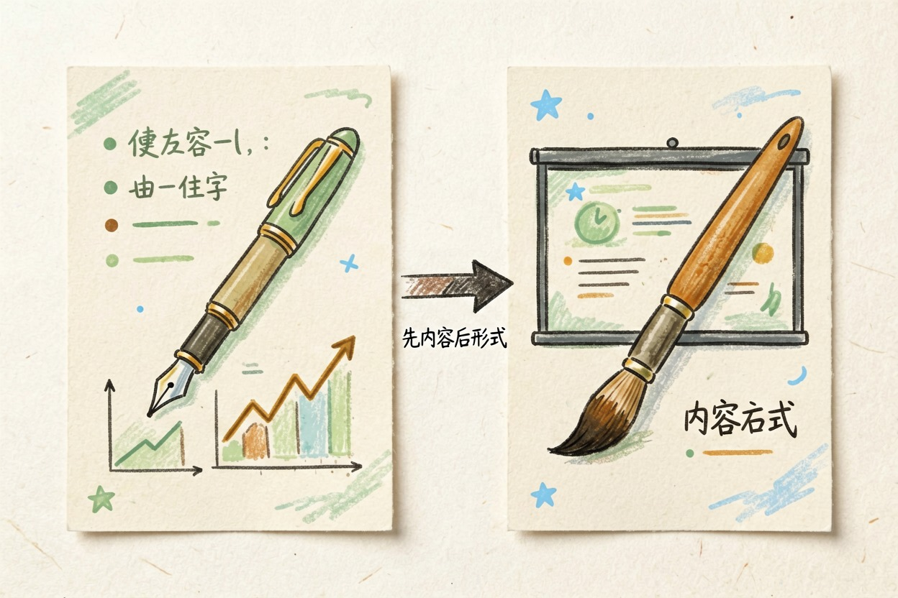
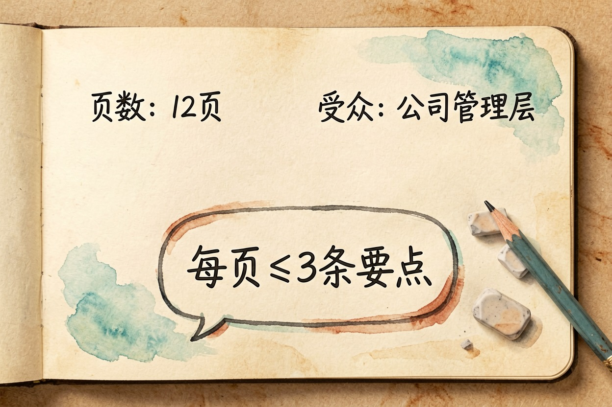
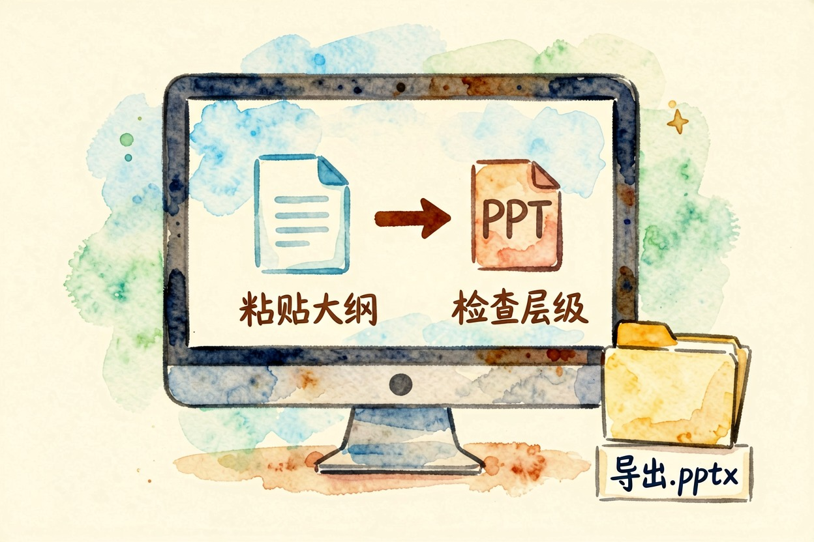
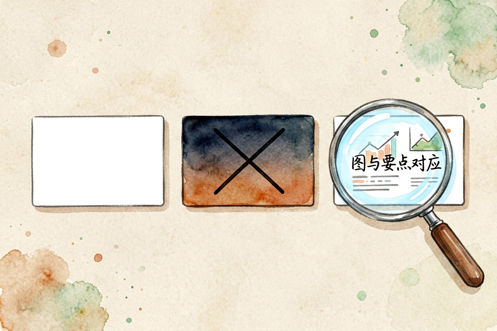
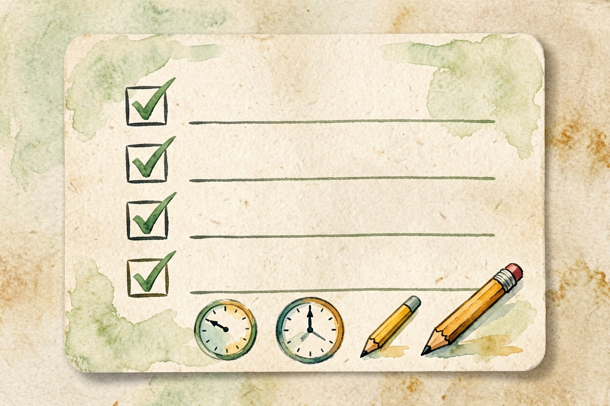
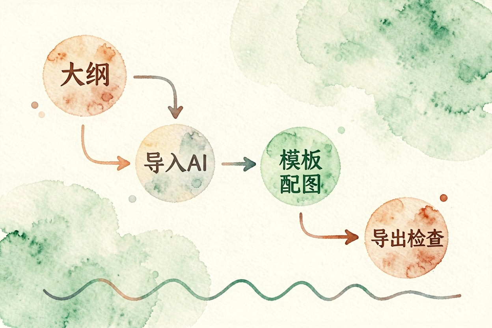

用 AI 做 PPT 怎么做？完整步骤加提示词
内容归对话 AI，排版归 PPT 工具。顺序反了，出来的只能是一堆看着饱满、其实没信息的套话。
AI 做 PPT 怎么做？正确顺序是先大纲后排版

AI 做 PPT 怎么做，最容易踩的坑是打开一个 AI PPT 网站，输入主题就点生成。这样出来的 PPT 一定空洞。工具手里没有任何信息，只能拿套话把版面填满。
正确的分工是两步走。先用对话 AI 写出结构化大纲，把内容想清楚；再把大纲导入 AI PPT 工具，让它只负责排版和配图。先解决说什么，再解决好不好看。
写大纲这步用 DeepSeek{:target="_blank"}、豆包、Kimi{:target="_blank"} 都行，这三款国内都能直接打开，日常对话免费。
这个顺序看着多一步，实际更省时间。大纲阶段改一句话只要几秒，等 PPT 排好版再想改结构，就得一页页挪。
第一步：生成结构化大纲

大纲提示词的关键，是把三个变量写死：页数、受众、每页要点数。少写一个，AI 就还你一份没有重点的流水账。
帮我写一份 PPT 大纲，主题：（主题）。
背景：这是给（受众，如公司管理层／答辩老师）看的，
汇报时长（X）分钟，我最想让他们记住的一件事是（核心结论）。
要求：
1. 共（12）页，含封面页和结尾行动建议页；
2. 每页 1 个标题加不超过 3 条要点，每条不超过 20 字；
3. 标注哪几页需要配图表，并说明图表类型；
4. 用 Markdown 无序列表输出，不要写演讲稿。拿到大纲先自己通读一遍，把套话删掉、把真实数据填进去，再进下一步。页数不对就让它重排。别自己硬凑。
第二步：把大纲导入 AI PPT 工具

主流 AI PPT 工具都支持粘贴文本或上传文档来生成，这条路比输入主题靠谱得多，因为内容是你定的。
导入时注意两点。层级要干净，一级标题对应一页，二级列表对应要点，层级一乱分页就错位。还有，先拿三五页小规模试一次，确认导出的是不是可继续编辑的 .pptx，别等做完 30 页才发现只能下载图片。
如果工具只支持输入主题、不支持粘贴大纲，那就把整份大纲当成主题的补充说明一起粘进去，效果也比只给一句主题好得多。
第三步：选模板与配图，别让 AI 全权决定

模板挑素净的。国内汇报场景里，深色渐变加大量动效往往减分；白底或浅色、一个主色调、字号统一，反而显得专业。
配图交给 AI 自动生成，容易出现风格不一致、插图里文字乱码，宁可用图表替掉装饰图。一页只放一张图，图和要点必须对得上。AI 最爱配一张好看但跟内容没关系的图，这是扣分重灾区。
导出前的 4 项检查

一查页数是否和汇报时长匹配，通常一页一分钟左右。二查每页字数，超过 5 行就该拆页或精简。三查数据准确性，AI 生成的百分比、年份、机构名必须逐个回原始材料核对，这里是硬伤高发区。四查涉密内容，确认没有把不该外传的信息留在备注栏里。
这四项加起来花不了十分钟，却能挡住绝大多数当场被问住的尴尬。
最后说一句反的：内部经营数据、客户信息、未公开材料，不要上传到在线 AI PPT 工具，这种场合就老老实实手工做。还有，只有三五页的简单汇报，AI 做 PPT 怎么做都不如直接手敲，走一趟 AI 流程反而更慢。

本文信息核对于 2026-08-04。AI 产品的价格、免费额度与功能变动频繁，实际以各工具官网当前说明为准。